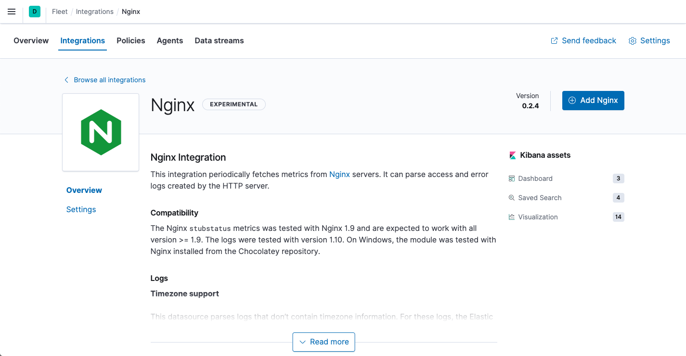

Quick start: Get logs and metrics into the Elastic Stackedit
This functionality is in beta and is subject to change. The design and code is less mature than official GA features and is being provided as-is with no warranties. Beta features are not subject to the support SLA of official GA features.
This guide describes how to:
- Collect logs and metrics from systems and services across your organization
- Send the data to the Elastic Stack
- Explore and visualize the data in real-time
For feedback and questions, please contact us in the discuss forum.
Prerequisitesedit
Before you begin, please read Limitations of this release.
You need Elasticsearch for storing and searching your data, and Kibana for visualizing and managing it. You can use our hosted Elasticsearch Service on Elastic Cloud (recommended), or self-manage the Elastic Stack on your own hardware.
Here’s what you need for each deployment type:
- Access to a deployment of our hosted Elasticsearch Service on Elastic Cloud. The Elasticsearch Service is available on AWS, GCP, and Azure. Try it out for free.
- User with the superuser role. See Built-in roles.
- Access to an Elasticsearch cluster and Kibana (version 8.0) with a basic license. Learn how to install the Elastic Stack on your own hardware.
-
Secure, encrypted connection between Kibana and Elasticsearch. See:
- Configuring security in Elasticsearch
- Configuring security in Kibana
-
Encrypt communications in Kibana
You can disable the TLS check by setting
xpack.fleet.agents.tlsCheckDisabled: truein the Kibana configuration. For example, you might want to do this if Kibana is behind a proxy that terminates the SSL connection.
- User with the superuser role. See Built-in roles.
-
In the Elasticsearch configuration, the
built-in API key
service must be enabled.
(
xpack.security.authc.api_key.enabled: true) -
In the Kibana configuration, the saved objects encryption key
(
xpack.encryptedSavedObjects.encryptionKey) must be set to any alphanumeric value of at least 32 characters. Fleet requires this setting in order to save API keys and encrypt them in Kibana.
Example security settings
For testing purposes, you can use the following settings to get started quickly, but make sure you properly secure the Elastic Stack before sending real data.
elasticsearch.yml example:
xpack.security.enabled: true xpack.security.authc.api_key.enabled: true
kibana.yml example:
xpack.security.enabled: true xpack.fleet.agents.tlsCheckDisabled: true xpack.encryptedSavedObjects.encryptionKey: "something_at_least_32_characters" elasticsearch.username: "my_username" elasticsearch.password: "my_password"
Step 1: Set up Fleetedit
The best way to get logs, metrics, and security data into the Elastic Stack is by using Fleet in Kibana.
Not using Fleet? Advanced users who want to configure and manage Elastic Agents manually can run agents standalone.
The first time you use Fleet, you need to set it up:
-
Log in to Kibana and go to Management > Fleet.

-
In Fleet, click Settings and change the defaults, if necessary. For self-managed installations, set the URLs for Elasticsearch and Kibana, including the http ports, then save your changes.

-
Enable central management. Click the Agents tab and click Create user and enable central management.

Step 2: Add an Elastic Agent to Fleetedit
Elastic Agent is a single, unified agent that you can deploy to hosts or containers to collect data and send it to the Elastic Stack. Behind the scenes, Elastic Agent runs the Beats shippers or Elastic Endpoint required for your configuration.
To send logs and metrics to the Elastic Stack:
- On the Agents tab, click Add agent, and look at the deployment instructions under Enroll in Fleet.
-
Download the Elastic Agent to your host:
curl -L -O https://artifacts.elastic.co/downloads/beats/elastic-agent/elastic-agent-8.0.0-darwin-x86_64.tar.gz tar xzvf elastic-agent-8.0.0-darwin-x86_64.tar.gz
curl -L -O https://artifacts.elastic.co/downloads/beats/elastic-agent/elastic-agent-8.0.0-linux-x86_64.tar.gz tar xzvf elastic-agent-8.0.0-linux-x86_64.tar.gz
- Download the Elastic Agent Windows zip file from the downloads page.
-
Extract the contents of the zip file into
C:\Program Files. -
Rename the
elastic-agent-<version>-windowsdirectory toElastic-Agent.
To simplify upgrading to future versions of Elastic Agent, we recommended that you use the tarball distribution instead of the DEB distribution.
curl -L -O https://artifacts.elastic.co/downloads/beats/elastic-agent/elastic-agent-8.0.0-amd64.deb sudo dpkg -i elastic-agent-8.0.0-amd64.deb
To simplify upgrading to future versions of Elastic Agent, we recommended that you use the tarball distribution instead of the RPM distribution.
curl -L -O https://artifacts.elastic.co/downloads/beats/elastic-agent/elastic-agent-8.0.0-x86_64.rpm sudo rpm -vi elastic-agent-8.0.0-x86_64.rpm
See the download page for other installation options.
- Under Choose an agent policy, notice that the default policy is selected. The default policy includes a system integration for collecting logs and metrics from the host system.
-
Under Enroll and start the Elastic Agent, copy the install command if it’s available for your platform, or make a note of the Kibana URL and enrollment key that was generated by Fleet.

-
In the directory where Elastic Agent is installed, install and start Elastic Agent. Note that this command will overwrite the
elastic-agent.ymlfile in that directory.We recommend that you run this command as the root user because some integrations require root privileges to collect sensitive data.
./elastic-agent install -f --kibana-url=KIBANA_URL --enrollment-token=ENROLLMENT_KEY
KIBANA_URLis the Kibana URL where Fleet is running, andENROLLMENT_KEYis the enrollment token acquired from Fleet. Don’t have a Fleet enrollment key? Read the Quick start guide to learn how to generate one.Omit
-fto run an interactive installation.We recommend that you run this command as the root user because some integrations require root privileges to collect sensitive data.
KIBANA_URLis the Kibana URL where Fleet is running, andENROLLMENT_KEYis the enrollment token acquired from Fleet. Don’t have a Fleet enrollment key? Read the Quick start guide to learn how to generate one.Omit
-fto run an interactive installation.Open a PowerShell prompt as an Administrator (right-click the PowerShell icon and select Run As Administrator).
From the PowerShell prompt, change to the directory where you installed Elastic Agent, and run:
.\elastic-agent.exe install -f --kibana-url=KIBANA_URL --enrollment-token=ENROLLMENT_KEY
KIBANA_URLis the Kibana URL where Fleet is running, andENROLLMENT_KEYis the enrollment token acquired from Fleet. Don’t have a Fleet enrollment key? Read the Quick start guide to learn how to generate one.Omit
-fto run an interactive installation.We recommend that you run this command as the root user because some integrations require root privileges to collect sensitive data.
elastic-agent enroll KIBANA_URL ENROLLMENT_KEY systemctl enable elastic-agent systemctl start elastic-agent
The DEB package includes a service unit for Linux systems with systemd. On these systems, you can manage Elastic Agent by using the usual systemd commands. If you don’t have systemd, run
sudo service elastic-agent start.KIBANA_URLis the Kibana URL where Fleet is running, andENROLLMENT_KEYis the enrollment token acquired from Fleet. Don’t have a Fleet enrollment key? Read the Quick start guide to learn how to generate one.Elastic Agent will restart automatically if the system is rebooted.
We recommend that you run this command as the root user because some integrations require root privileges to collect sensitive data.
elastic-agent enroll KIBANA_URL ENROLLMENT_KEY systemctl enable elastic-agent systemctl start elastic-agent
The RPM package includes a service unit for Linux systems with systemd. On these systems, you can manage Elastic Agent by using the usual systemd commands. If you don’t have systemd, run
sudo service elastic-agent start.Elastic Agent will restart automatically if the system is rebooted.
-
In Fleet, click Continue to go to the Agents tab, where you should see the newly enrolled agent.

If the status hangs at Enrolling, go back to the command line where you started Elastic Agent and make sure the agent is running.
If you run into problems, see Troubleshoot common problems.
Step 3: Monitor host logs and metricsedit
View the data sent by Elastic Agent. Right now, Elastic Agent is only sending data about the host system because you haven’t configured the agent to collect data from other sources yet.
To see host logs and metrics:
- In Fleet, click the Data streams tab.
-
In the Actions column, navigate to the dashboards corresponding to the data stream.

For example, to see host metrics, select one of the system datasets, and navigate to the [Metrics System] Host overview ECS dashboard:

Step 4: Monitor Nginx logs and metricsedit
To get started, browse a catalog of integrations, then add an Nginx integration to the default policy used by your agent. You use policies to manage settings across a group of agents. An agent policy may contain any number of integrations for collecting observability data from the various services running on your host.
For these steps, we assume that you have nginx running on some of your
infrastructure, and want to collect logs and metrics from it.
-
In Fleet, click the Integrations tab and use the search bar to find the Nginx integration.

-
Click the Nginx integration to see more details about it, then click Add Nginx.
 -
On the Add Nginx integration page, select the default policy.
In this guide, you add integrations to the default policy created by Kibana. After you learn the basics, you can create your own policies and assign them to agents.

- Under Configure integration, click the down arrow next to enabled streams and make sure the Paths are correct for your host. Inspect or change other settings
-
When you’re done, save and deploy the changes.
The newly added Nginx integration should appear under Integrations in the default policy, along with the
system-1integration that you used earlier to collect host data.
All Elastic Agents that use this policy will collect logs and metrics from the Nginx server and the host.
- To view the data, click the Data streams tab.
- In the Actions column, navigate to the dashboards corresponding to the data stream.
What’s next?edit
- Now that data is streaming into the Elastic Stack, take your investigation to a deeper level! Use Elastic Observability to unify your logs, metrics, uptime, and application performance data.
- Want to protect your endpoints from security threats? Try Elastic Security. Adding endpoint protection is just another integration that you add to the agent policy!
- Are your eyes bleary from staring at a wall of screens? Create alerts and find out about problems while sipping your favorite beverage poolside.
- Want Elastic to do the heavy lifting? Use machine learning to detect anomalies.
- Got everything working like you want it? Roll out your agent policies to other hosts by deploying Elastic Agents across your infrastructure!